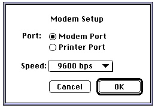

Creating a Pop-Up Menu
In System 7, pop-up menus are implemented as controls. You define the menu items of a pop-up menu in the same way as in other menus (using a'MENU'resource), and you define specific features of the pop-up menu itself (such as the location of the pop-up menu) in a control that uses the standard pop-up control definition function. Pop-up menus provide the user with a simple way to select from among a list of choices without having to move up to the menu bar. They are particularly useful in a dialog box that requires the user to specify a number of settings or values. Figure 3-33 shows an example of a pop-up menu in a dialog box.Figure 3-33 A pop-up menu in a dialog box

To create a pop-up menu, create a control that uses the pop-up control definition function, define the pop-up menu and its menu items, and associate the control with a window or dialog box. You can use Dialog Manager or Control Manager routines to display pop-up menus.
For example, if you define a modal dialog box that contains a pop-up control and use the Dialog Manager to display and help handle events in the dialog box, the Dialog Manager automatically uses the pop-up control definition function to draw the control and also to handle user interaction when the user presses the mouse button while the cursor is over a pop-up control.
If your application defines a control in one of your application's windows, you can use
TrackControland other Control Manager routines to handle the pop-up menu.The pop-up control definition function draws a box around the pop-up box, draws the drop shadow, inserts the text into the pop-up box, draws the downward-pointing triangle, and draws the pop-up title. When a dialog box contains a control that uses the pop-up control definition function and the user presses the mouse button while the cursor is in the pop-up control, the pop-up control definition function highlights the pop-up menu title, displays the pop-up menu, and handles all user interaction until the user releases the mouse button. When the user releases the mouse button, the pop-up control definition function closes the pop-up box, draws the user's choice in the pop-up box (or restores the previous item if the user did not make a new choice), stores the user's choice as the value of the control, and unhighlights the pop-up menu title. Your application can use the Control Manager function
GetControlValueto get the value of the control and to determine the currently selected item in the pop-up menu.To create a pop-up control, create a control and specify that the control uses the pop-up control definition function by specifying the
popupMenuProcconstant:CONST popupMenuProc = 1008; {pop-up menu control}If you specifypopupMenuProc(plus any appropriate variation code) as theprocIDfield of the resource description of a control, when your application creates the control (by using the Dialog Manager or by usingGetNewControl) the Control Manager creates the pop-up control, which includes the pop-up title and the pop-up box with a one-pixel drop shadow. The appearance of the pop-up title and the values in the menu are controlled by other values stored in the resource (or other parameters passed toNewControl). See the chapter "Control Manager" in this book for information on
theNewControlfunction.If your application does not use the standard pop-up control definition function, you
can create your own control definition function to implement pop-up menus. In this
case you can use thePopUpMenuSelectfunction to draw the pop-up menu and track the cursor within the menu. Your application is responsible for highlighting the title of the pop-up menu before callingPopUpMenuSelectand unhighlighting the title afterward (to duplicate the behavior of menu titles in the menu bar). Your application must also set the mark of the items in the pop-up menu as appropriate if you use thePopUpMenuSelectfunction.For more information on creating controls, see the chapter "Control Manager" in this book. For listings that define the dialog box shown in Figure 3-33, see the chapter "Dialog Manager" in this book.